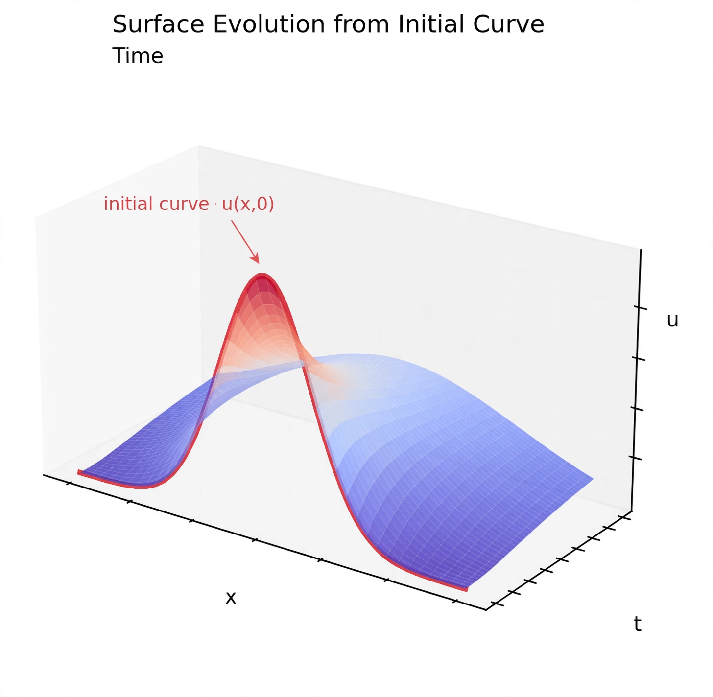

Cauchy problemIn mathematics, a Cauchy problem asks for the solution of a partial differential equation that satisfies certain conditions given on a hypersurface in the domain. A Cauchy problem can be an initial value problem or a boundary value problem, and is a generalisation of the concept to higher dimensions, named after Augustin-Louis Cauchy.
For a PDE defined on a domain in Rn+1, the Cauchy problem supplies the values of the unknown function and its normal derivatives up to a certain order on a smooth hypersurface S. The data must satisfy compatibility conditions, and S should nowhere be characteristic for the equation if a smooth solution is expected to exist locally.
Following Hadamard, a problem is well-posed if a solution exists, is unique, and depends continuously on the data. The classic example of an ill-posed Cauchy problem is the Laplace equation with Cauchy data, where small perturbations in data can produce arbitrarily large solution changes, as Hadamard demonstrated. The Cauchy–Kovalevskaya theorem guarantees local analytic solutions for analytic data on non-characteristic surfaces.
The wave equation with prescribed initial displacement and velocity is the prototypical well-posed Cauchy problem; general relativity is formulated as a Cauchy (initial value) problem for Einstein's equations.